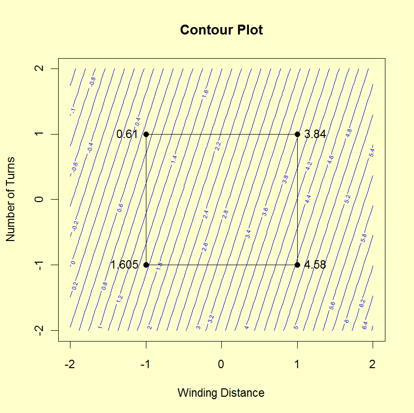

|
1.
Exploratory Data Analysis
1.3. EDA Techniques 1.3.3. Graphical Techniques: Alphabetic 1.3.3.10. Contour Plot
|
|||
| DOE Contour Plot: Introduction |
The DOE contour plot is a specialized contour plot used
in the analysis of
full and
fractional
experimental designs. These designs often have a low level, coded
as "-1" or "-", and a high level, coded as "+1" or "+" for each
factor. In addition, there can optionally be one or more
center points. Center points are at the mid-point between
the low and high level for each factor and are coded as "0".
The DOE contour plot is generated for two factors. Typically, this would be the two most important factors as determined by previous analyses (e.g., through the use of the DOE mean plots and an analysis of variance). If more than two factors are important, you may want to generate a series of DOE contour plots, each of which is drawn for two of these factors. You can also generate a matrix of all pairwise DOE contour plots for a number of important factors (similar to the scatter plot matrix for scatter plots). The typical application of the DOE contour plot is in determining settings that will maximize (or minimize) the response variable. It can also be helpful in determining settings that result in the response variable hitting a pre-determined target value. The DOE contour plot plays a useful role in determining the settings for the next iteration of the experiment. That is, the initial experiment is typically a fractional factorial design with a fairly large number of factors. After the most important factors are determined, the DOE contour plot can be used to help define settings for a full factorial or response surface design based on a smaller number of factors. |
||
| Construction of DOE Contour Plot |
The following are the primary steps in the construction
of the DOE contour plot.
|
||
| Sample DOE Contour Plot |
The following is a DOE contour plot for the data used in the
Eddy current case
study. The analysis in that case study demonstrated that
X1 and X2 were the most important factors.
 |
||
| Interpretation of the Sample DOE Contour Plot |
From the above DOE contour plot we can derive the following
information.
|
||
| Interaction Significance | Note the appearance of the contour plot. If the contour curves are linear, then that implies that the interaction term is not significant; if the contour curves have considerable curvature, then that implies that the interaction term is large and important. In our case, the contour curves do not have considerable curvature, and so we conclude that the X1*X2 term is not significant. | ||
| Best Settings |
To determine the best factor settings for the already-run
experiment, we first must define what "best" means. For the
Eddy current data set used to generate this DOE contour plot,
"best" means to maximize (rather than minimize or hit
a target) the response. Hence from the contour plot we
determine the best settings for the two dominant factors by
simply scanning the four vertices and choosing the vertex
with the largest value (= average response). In this
case, it is (X1 = +1, X2 = +1).
As for factor X3, the contour plot provides no best setting information, and so we would resort to other tools: the main effects plot, the interaction effects matrix, or the ordered data to determine optimal X3 settings. |
||
| Case Study | The Eddy current case study demonstrates the use of the DOE contour plot in the context of the analysis of a full factorial design. | ||
| Software | DOE Contour plots are available in many statistical software programs that analyze data from designed experiments. | ||